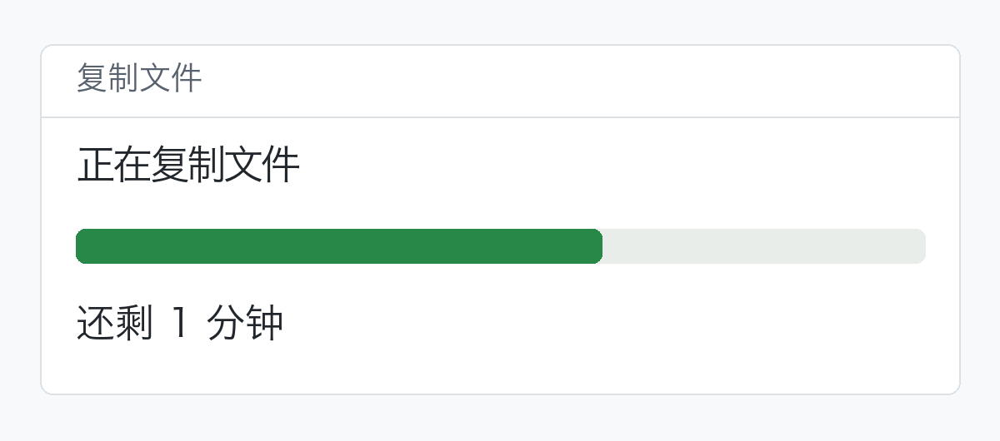
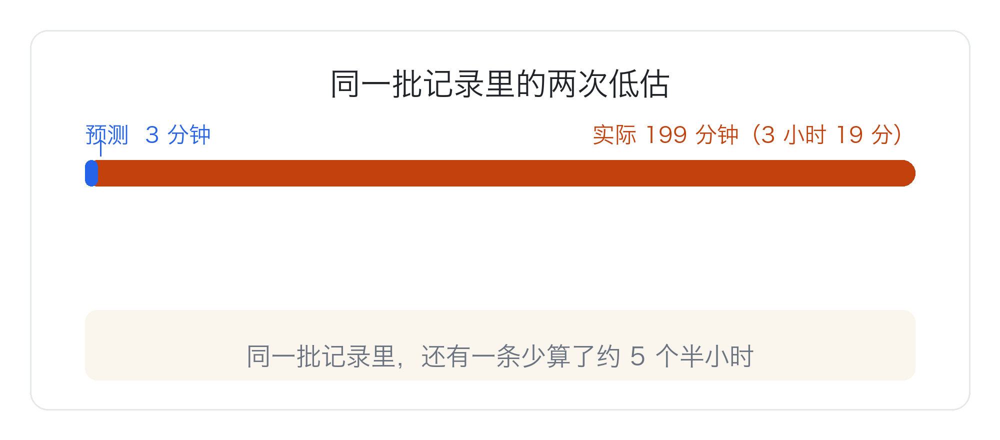
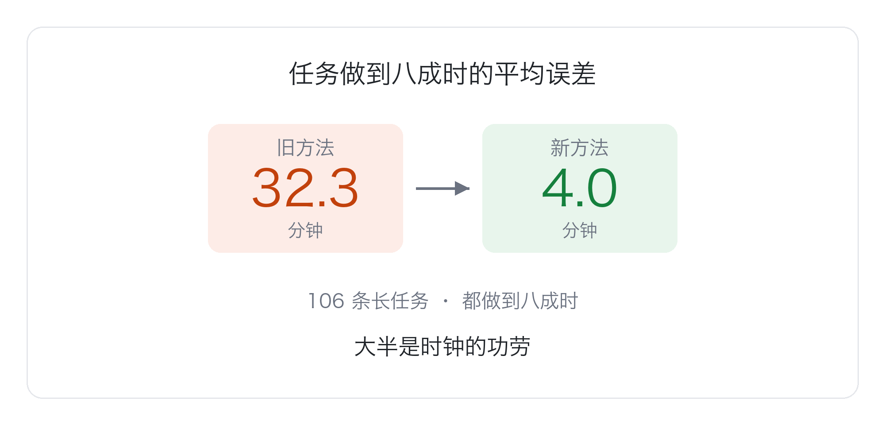

我们都是那个说"还剩 1 分钟"的进度条
为什么“还剩 1 分钟”会变成 5 分钟？从复制文件说到做项目时该什么时候重新估时间。

复制文件时，Windows 说“还剩 1 分钟”。我等了十分钟，还是那一分钟。
做项目也会这样。比如团队估两天能把报名页交出去，做到接表单才发现还要补邮件确认。你这时已经知道得多留一天，等着上线的人却还按原来的时间安排。
那一分钟是怎么算出来的
简单说，剩余时间就是剩下的文件大小 ÷ 当前的复制速度。同样剩 600 MB，按 10 MB/s 算是 1 分钟，碰上一堆小文件，速度掉到 2 MB/s，就变成 5 分钟。
Windows 至少知道还有多少数据没拷完。做项目时，连剩下多少活都可能变。我的 AI 助手也会一边做，一边发现开工时没想到的步骤。
有一次，助手开工时报 3 分钟，实际做了 3 小时 19 分。我翻了三个多月的记录，找出 967 个实际超过 15 分钟的任务。它们开工时平均估不到 4 分钟，实际平均用了 39 分钟。

同一批任务里，还有一次少估了约 5 个半小时。
边做边算，有多大用？
我让 AI 写了一个会更新的算法。开工时报个大概，每做完一步，就按已经做了多少、花了多久，再估一次。已经做了 20 分钟，总时长至少是 20 分钟。
用过去 106 个长任务的记录重算，做到八成时，平均误差从 32.3 分钟降到 4.0 分钟。我一开始觉得改得挺好。

另一个 AI 问我，如果只看已经花了多久呢？已经干了二十多分钟，光看表也能排除“总共 3 分钟”。误差小了，里面有多少是算法的功劳，还得在更早、信息更少的时候比一比。
下次什么时候再估？
回到报名页的例子。团队发现要补邮件确认时，就可以告诉等着上线的人：“还得两天。今天先把邮件跑通，明早再确认交付时间。”对方能据此改安排，也知道什么时候会有新消息。
现在别人问我多久，我会先想上次类似的事花了多久，再想哪个环节最可能把日期推迟。做到那个环节时，如果情况变了，就早点改口。